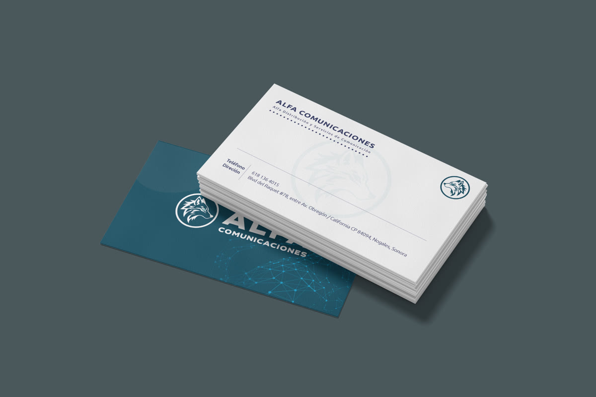
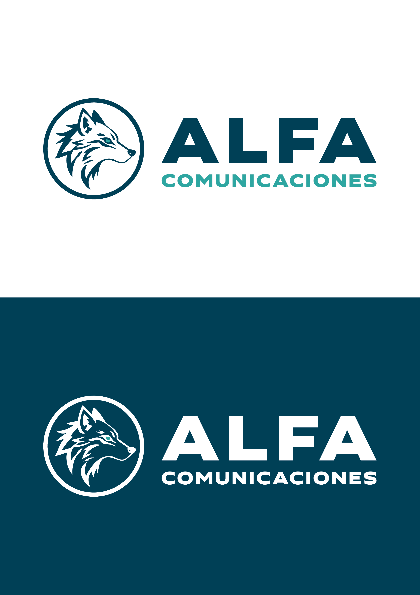
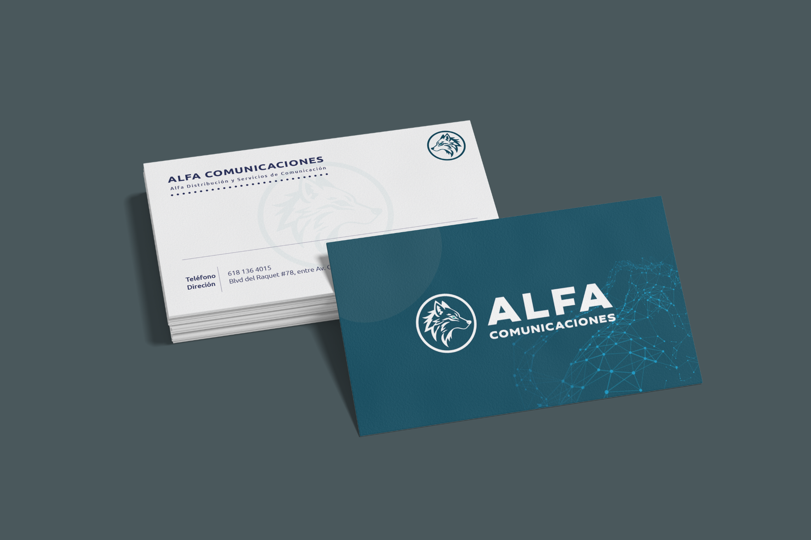
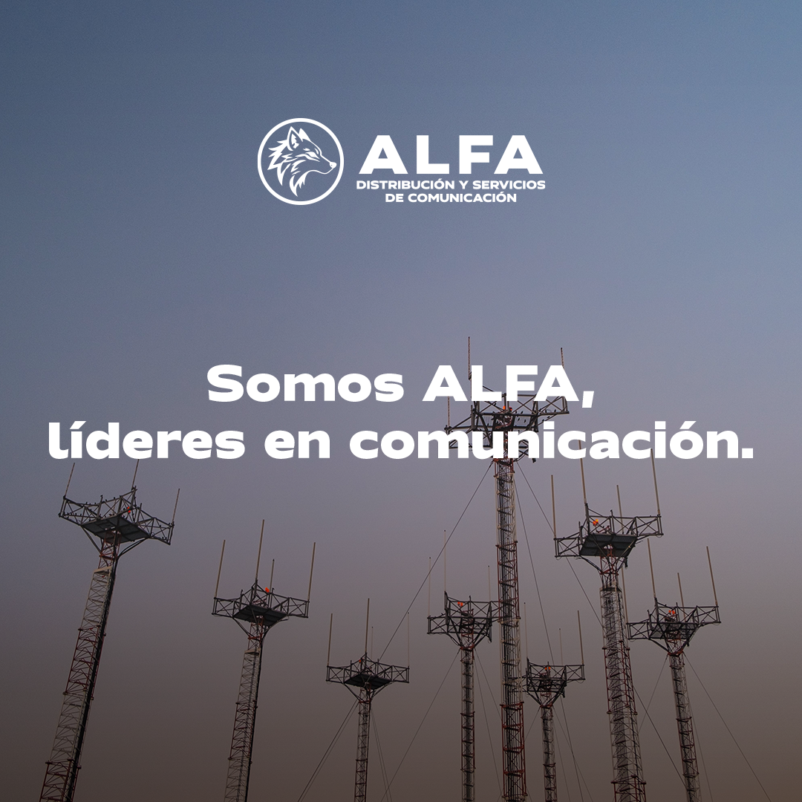

§ 01 — Identidad · telecomunicaciones
Alfa Comunicaciones
Identidad visual para una empresa de telecomunicaciones que necesitaba diferenciarse sin caer en clichés del sector: símbolo, paleta, tipografía y reglas de uso.
Brandbook completo
Autoría total
Telecom · B2B

El símbolo primero.
Un isotipo circular construido sobre los valores de la marca — pensado para reproducirse en tamaño pequeño sin perder lectura.

Sistema completo.
Paleta sobria, tipografía técnica y reglas de composición claras: lo que necesita una marca B2B para sobrevivir su día a día.


Diferenciarse en telecom no exige ruido —
exige criterio
que aguante el día a día.
— Criterio de identidadAlfa Comunicaciones · 2024
Lo que sigue: las aplicaciones reales — cómo el sistema sobrevive en tarjetas y papelería corporativa.
Brandbook documentado.
1
Brandbook completo
Sistema
Símbolo · paleta · tipografía
Autoría
Liderazgo total
Inventario de piezas
- SímboloIsotipo circular construido sobre los valores de marca.
- Sistema visualPaleta, tipografía y reglas de composición documentadas.
- BrandbookDocumento de reglas de uso completo y aplicable en el tiempo.
- TarjetasSistema de tarjetas de presentación corporativas.
- PapeleríaAplicaciones secundarias bajo el mismo sistema.
Aplicaciones que aterrizan.
Una identidad aplicable y documentada: símbolo, sistema y brandbook para sostener la marca sin depender de quien la diseñó.
ClienteAlfa Distribución y Servicios de Comunicación
IndustriaTelecomunicaciones · B2B
RolLead brand designer · sistema · brandbook
AgenciaIntuitiva · Mérida
Año2024
TipoAutoría completa · brandbook confirmado
← Proyecto anteriorNeuromuscular MIDUI/UX · web · salud
Siguiente proyecto →GBCBrand rollout · construcción
© 2026 Julio Morcillo — Todos los derechos reservados.Diseñado y construido en Mérida, MX.